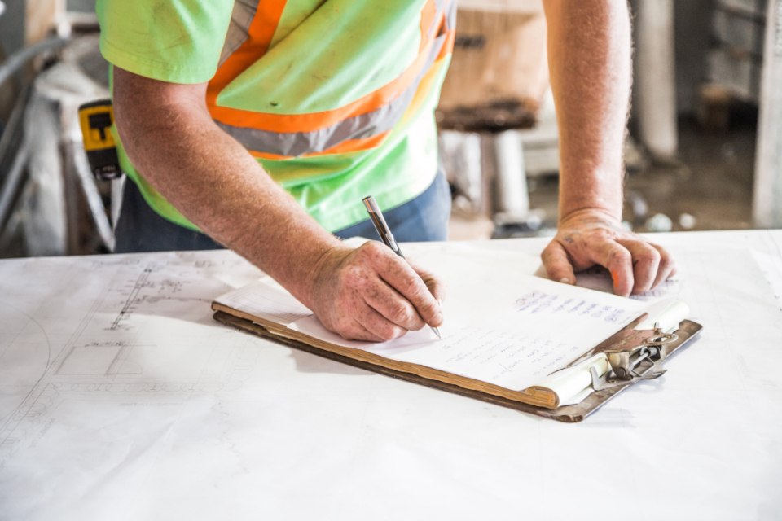
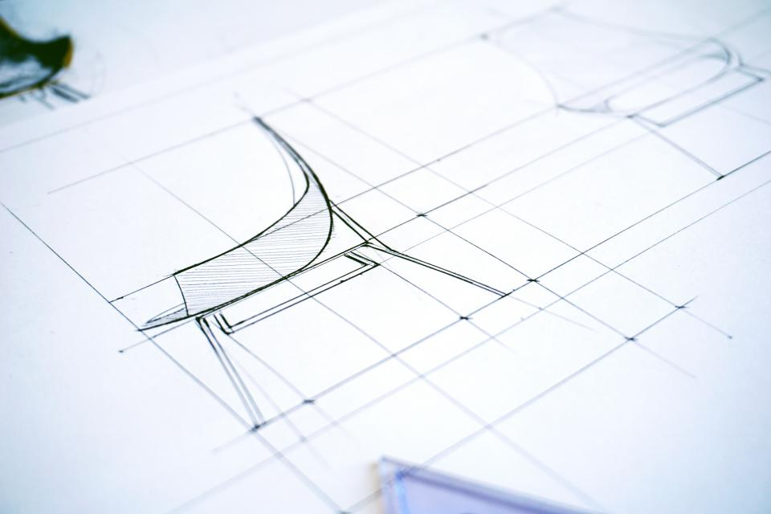
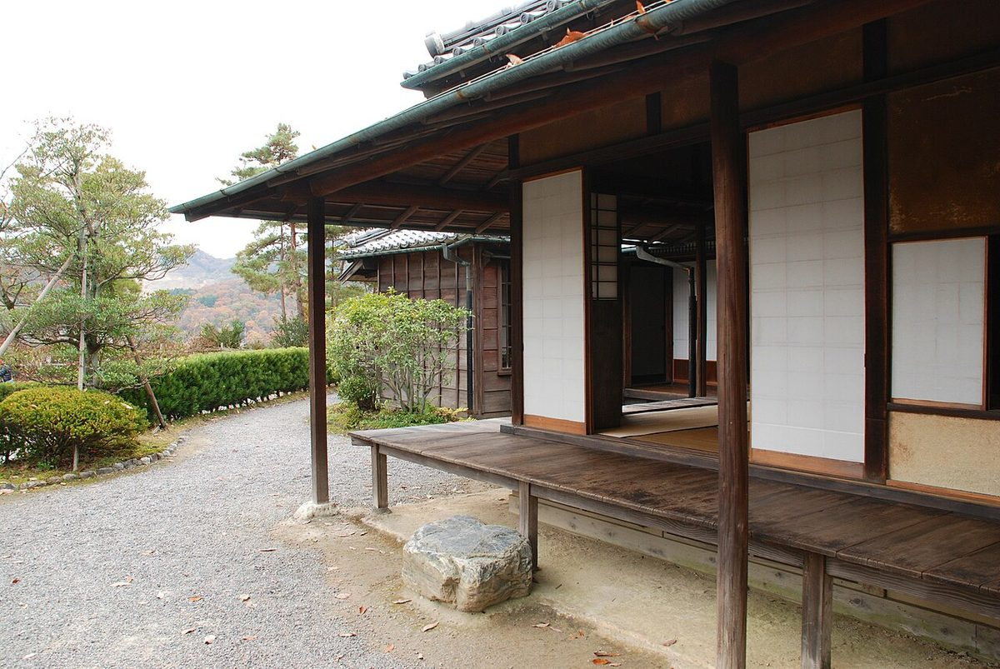

家づくりの流れ
はじめてのご相談から、お引き渡し後まで。進め方はご事情に合わせて調整します。
内容と順序は一例です
期間・費用の目安は準備中
-
STEP01
ご相談・ヒアリング
現在のお住まいのお困りごとやご希望を、じっくりうかがいます。漠然としたお考えの段階でも大丈夫です。

-
STEP02
現地調査・採寸
敷地や建物の状態、日当たりや周辺環境を確認し、必要な寸法を丁寧に測ります。
-
STEP03
プランのご提案
うかがった内容と現地の状況をもとに、間取りや改修内容をご提案します。

-
STEP04
木材の選定と仕様決め
使う木材や仕上げ、設備を、実物を見ながら一緒に選んでいきます。

-
STEP05
ご契約・着工
内容にご納得いただいたうえで契約を結び、工事の準備を整えて着工します。
ご納得のうえで、着工へ -
STEP06
施工・中間確認
工事の途中でも現場をご覧いただき、気になる点はその都度ご相談いただけます。

-
STEP07
お引き渡し・アフター
仕上がりを一緒に確認し、お引き渡しします。その後の暮らしの相談にも応じます。

よくある質問
Q. 相談だけでも大丈夫ですか?
A. もちろん構いません。お考えの段階から、ご相談の上で決めていきます。
Q. 工事の期間や費用はどのくらいですか?
A. 内容によって変わるため、ご相談の上で決めていきます。目安は準備中です。
Q. 一部だけの工事もできますか?
A. 水まわりのみ、内装のみなど、ご相談の上で決めていきます。
まずは、お話をお聞かせください。
流れに沿って、ひとつずつ丁寧にご案内します。